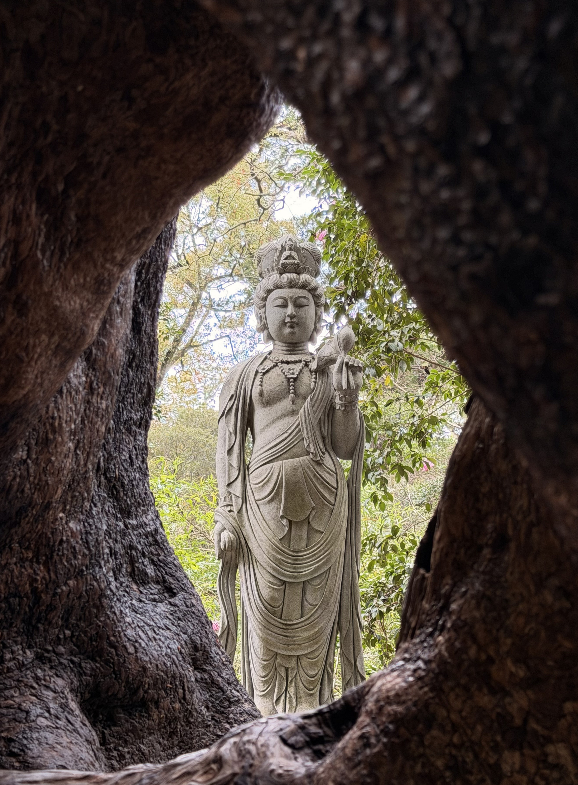
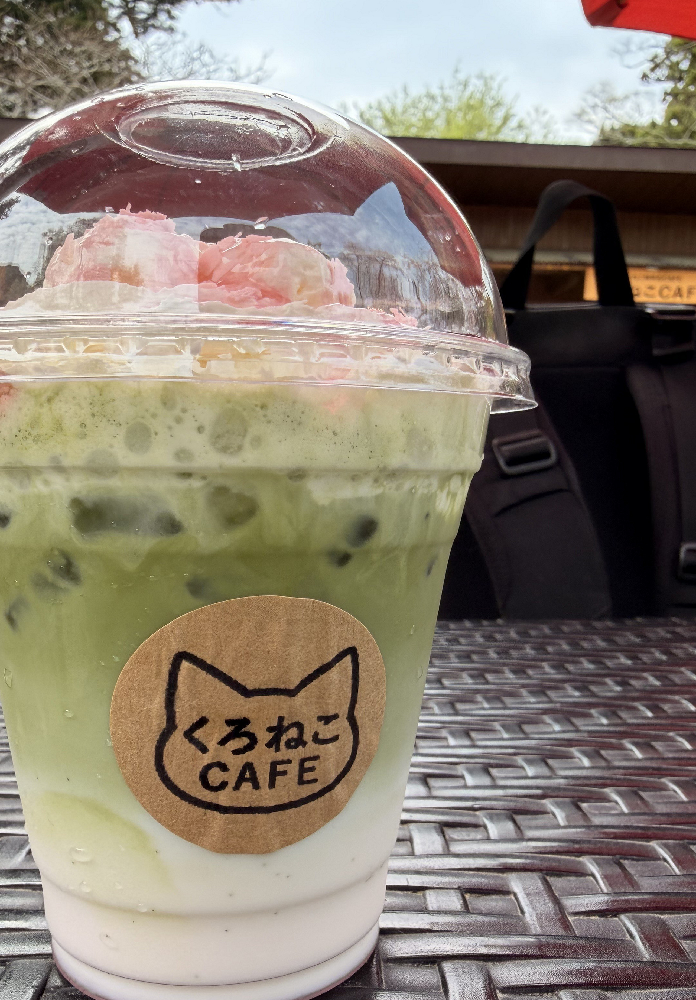
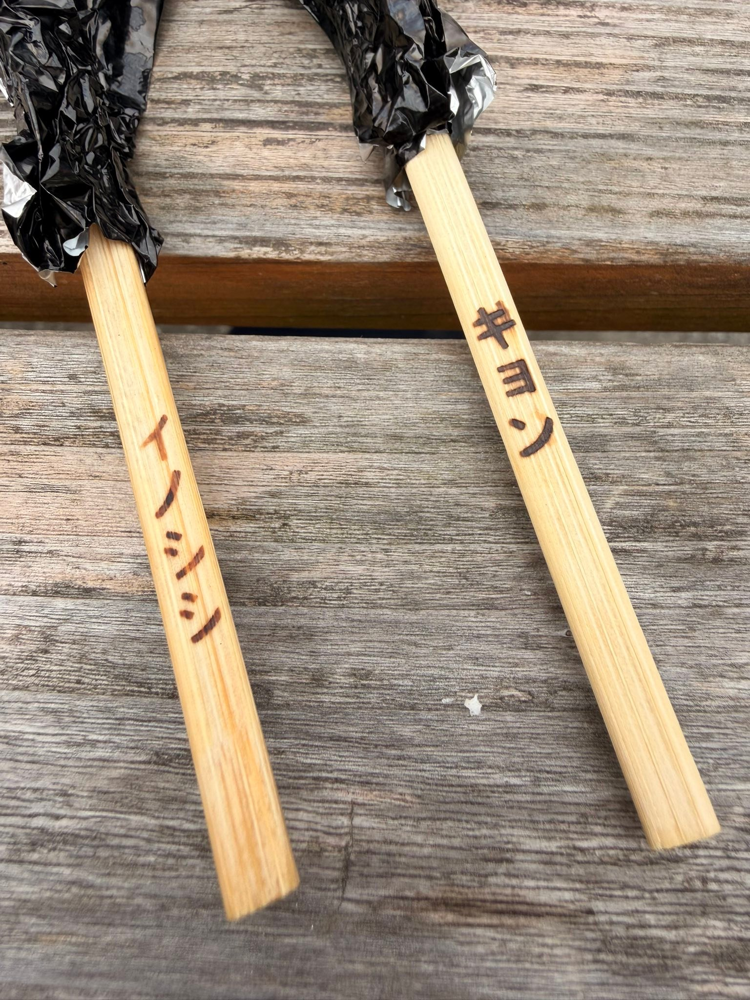
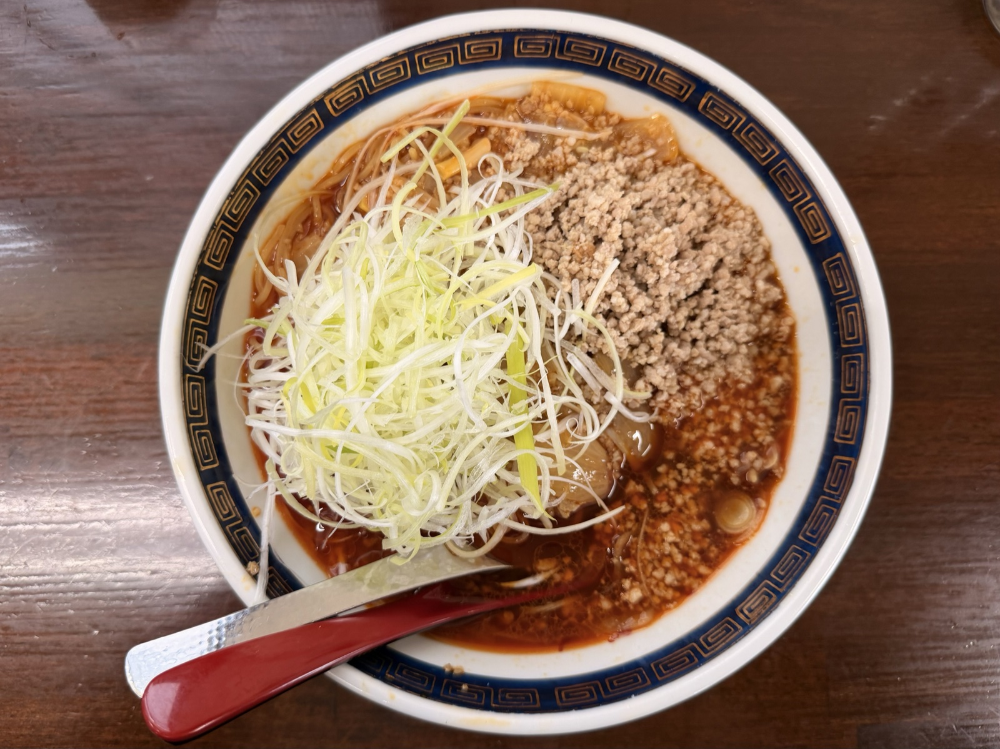

Salí a rodar por la Chiba primaveral con la XSR900. El destino: Kasamori Kannon, un templo antiguo en plena montaña, en el pueblo de Chōnan. Su salón principal está construido sobre una formación rocosa natural, con un estilo arquitectónico que se considera único en Japón. Aun viviendo en la prefectura, nunca había encontrado el momento para visitarlo.

Kasamori Kannon
Su nombre oficial es Kasamori-dera, un templo de la escuela Tendai que, según la tradición, se fundó en el periodo Heian. El salón principal se levanta sobre una roca natural, sostenido por 61 columnas de madera en una estructura llamada shihō-kakezukuri. Es la única construcción de este tipo en Japón y está designada Bien Cultural Importante a nivel nacional.




Izquierda: estatua Niō del recinto, con un rostro imponente. Centro: vista de Kannon a través del hueco de un árbol viejo. Derecha: bebida de matcha del Kuroneko Café, dentro del recinto.
Comer ciervo de Reeves y jabalí
Tras la visita, comí carne de caza (jibie) en un local cerca del templo. En la carta había brochetas de ciervo de Reeves (kyon) y de jabalí.
El kyon es un pequeño ciervo originario de Taiwán y el sur de China. En Chiba, animales escapados de un zoológico ya cerrado se asilvestraron, y hoy hay decenas de miles, sobre todo en el sur de Bōsō. Está catalogado como Especie Exótica Invasora y causa serios daños a la agricultura, por lo que a veces se aprovecha en la cocina jibie como parte de las medidas de control y aprovechamiento.

Los palillos llevaban los nombres de los animales grabados a fuego. Solo con verlos, la comida ya se pone divertida. La lluvia iba y venía, pero justo en ese momento había escampado.
La carne de kyon era poco fuerte y ligera. La de jabalí, en cambio, tenía un sabor marcado, con un punto salvaje. Son sabores que probablemente solo se consigan viniendo a Chiba.
Almuerzo — el tantanmen de Ezawa
De vuelta paré en Ezawa, conocido por su tantanmen con buen punto picante y sabor a sésamo. Es un local muy querido por la gente del lugar. Como hace pensar el montón de cebollino sobre el cuenco, el caldo tiene profundidad. Después de un día rodando, ese plato picante y cargado de umami sentaba estupendamente al estómago vacío.

Rodar la montaña de Chiba con la XSR900
El interior de la península de Bōsō tiene poco tráfico y muchas carreteras agradables que se adentran entre el verde. No hay grandes desniveles como en zonas montañosas más serias, pero a cambio se puede mantener un buen ritmo y rodar largo. La XSR900 maneja con ligereza y, aun en tramos sinuosos, no llegué a cansarme.
Hace un tiempo que cambié desde la SR400, y la suavidad y el empuje del tres cilindros me siguen impresionando. A veces echo de menos el latido de la SR, pero en confort de larga distancia la XSR900 está claramente por encima.
Pensaba que en Chiba —mi base— ya conocía todos los caminos, pero todavía hay sitios como Kasamori Kannon. Basta con fijar un destino para que la prefectura de siempre se convierta en otra ruta del todo distinta.